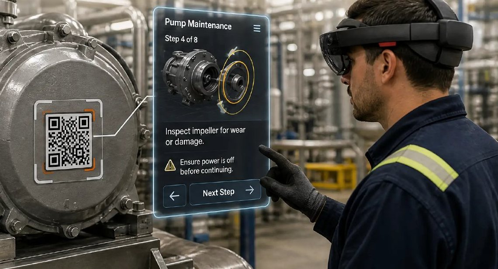
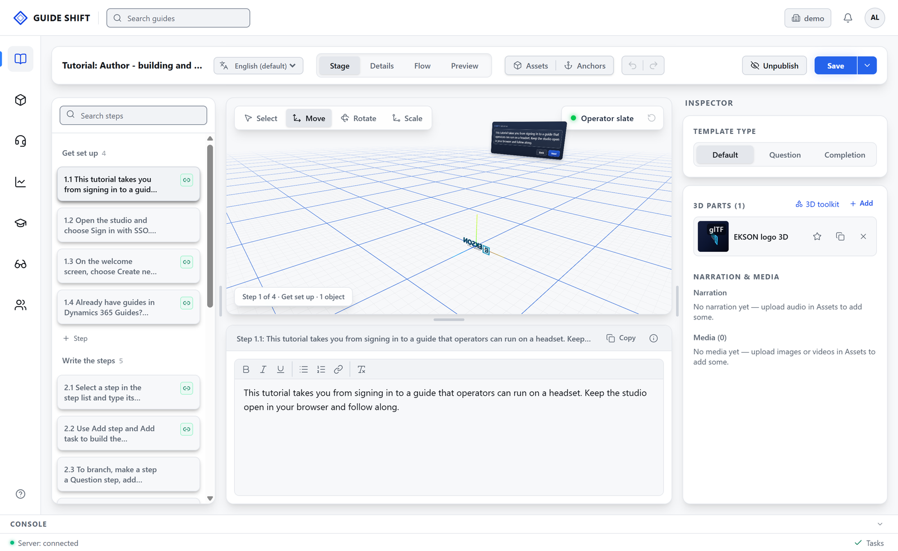

Hosted by EKSON
- We run it; you sign in
- Nothing to install
- Your own private workspace
Best for: fast starts
D365 Guides support ends 31 Dec 2026 Plan your move
Guide Shift is the continuation path for Dynamics 365 Guides and Remote Assist teams: free guide migration, the step structure you already know, and every headset you use.

Your existing guides, steps and 3D assets move across.
HoloLens 2 keeps working, and Quest 3 and PICO 4 join it.
One guide plays on every supported headset.
An in-house team means high quality at a fair price.
The migration path
Two modules cover what Guides and Remote Assist did, without the HoloLens-only limit or the end-of-support deadline.
Step-by-step work instructions on HoloLens 2.
Browser studio and operator app for guided work.
Live help from an expert on a call.
Live video, annotations and file sharing with the person on the floor.
Guide Shift Procedures
Capture and share expert know-how through one platform.

At a glance
| Capability | Guide Shift | D365 Guides |
|---|---|---|
| Step-by-step mixed reality work instructions | ✓ | ✓ |
| Imports existing D365 guides | ✓ | n/a |
| Quest 3, HoloLens 2 and PICO 4 Enterprise | ✓ | ✕ |
| Authoring in the browser | ✓ | ✕ |
| Printable QR anchors | ✓ | ✕ |
| Run history and analytics | ✓ | ✓ |
| Remote expert calls | ✓ | ✓ |
| Offline playback | ✓ | ✕ |
| Host on your own servers | ✓ | ✕ |
| Custom 3D and VR training from our team | ✓ | ✕ |
| Roadmap | Actively developed | Support ends 31 Dec 2026 |
Why Guide Shift
Because development, 3D and subject-matter expertise sit under one roof, you get high quality without agency prices.
We bring your Guides content across and fix whatever needs attention.
Programmers, 3D artists and subject-matter experts work together on your project.
We turn procedures into immersive VR training and build the 3D content you need.
No reseller layers. You pay for the work, not the overhead.
Built for your role
Migration looks different from every seat. Here is what Guide Shift delivers for each.
Open formats, your choice of hosted or on-premises, and an auditable import.
Migrate in parallel while shifts keep running. One platform for a mixed fleet.
The same step-by-step flow, on the headset or device at hand.
Free migration and fair pricing make the case easy to sign off.
Bring every guide across, then extend it into VR training.
Deployment options
Same product either way. You choose where it runs.
Both: Open formats, no lock-inOffline playback
Ready to get started?
Save them from Dynamics 365 as .guide files.
Upload them to the studio and check the import report.
Adjust anything you like and start using the guide on your headsets.

Questions
Answers about moving from Dynamics 365 Guides to Guide Shift.
Importing is automatic: you export your guides as .guide files and upload them. How long the whole move takes depends on how many guides you have and how much you want to review or improve. After a short assessment we give you a plan and a realistic timeline.
Guides come across with their steps, media and 3D content. Anything that cannot be carried over exactly is listed in the import report, and nothing is deleted. Our team can fix those items for you.
Meta Quest 3, HoloLens 2 and PICO 4 Enterprise, with the same guide on each. You can keep the HoloLens 2 headsets you already own.
Our own engineers, 3D artists and subject-matter experts handle onboarding and fixes, and stay available once you are running. You deal with the people who build the product.
They are imported with the guide. If a model needs optimising or rebuilding for a different headset, our 3D artists can do it as part of the project.
Export the guides from Dynamics 365, import them into the Guide Shift studio, review the import report, then edit and publish. We only need the exported file, never your Microsoft credentials.
Yes. Our team has delivered many VR and mixed reality projects, and can turn your procedures into immersive training simulations or build new 3D content.
Pricing depends on users, devices and hosting. Because the whole team is in-house, we keep it well below typical vendor rates. Request an assessment for a quote.
Guide Shift highlights